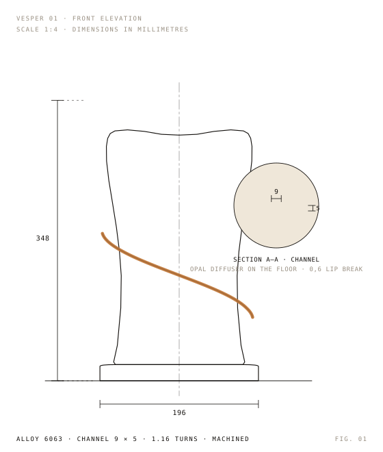

01 — portable light · 348 mm
Carry a different atmosphere.
Vesper 01 is a hand-held column of cast aluminium with one helical channel milled into it. Nothing glows on its surface. The light leaves through the gap and lands on whatever room you put it in.
Drag the object, or use ← → here.Slide to rotate the object.
Hearth · 2 400 K · 96 lm · Slate
Scroll02 — the seam
The light comes out of the gap.
A single 9 mm channel is machined 1.16 turns around the body. An opal diffuser sits deep behind it in the casting. From most angles the channel is just a dark line — walk around the object and it opens.
Because the source is a line and not a point, the light it throws is a band. Height, distance to the wall and the direction the channel faces decide how sharp that band is.
- iAperture 9 mm
1.16 turns - iiBody 348 mm
bead-blasted cast aluminium - iiiPlinth 1.9 kg
knurled dial, 18 h
03 — atmosphere
Four atmospheres.
One object.
The dial on the plinth sweeps 1 850 K to 4 600 K with no steps and no flicker. Vesper remembers the last setting when it is picked up.
04 — finishes
Four finishes,
one casting.
Every body comes out of the same mould and is finished by hand, so the shape never changes — only the temperature of the metal around it.
05 — specification
Measured, not described.
Drawn at 1:4 from the same profile the render uses, so the numbers in this table and the object above are the same object.

| Body | Cast aluminium, bead-blasted; four finishes |
|---|---|
| Height | 348 mm (body 328 mm on a 20 mm plinth) |
| Plan | Oval, 196 × 158 mm at the plinth |
| Channel | 9 mm aperture, 1.16 turns, machined |
| Diffuser | Opal PMMA, seated 5 mm behind the channel |
| Output | 34–240 lm, 1 850–4 600 K, flicker-free |
| Battery | 18 h at 96 lm; USB-C, 2 h to full |
| Control | Knurled plinth dial, infinite travel, memory |
| Weight | 1.9 kg |
| Rating | IP44 — indoor and sheltered outdoor |
Fig. 02 The channel aperture, seen at 1:1. It is a groove machined into the body — the wall of the groove catches the light and throws it onto the room, which is why the object never reads as a glowing tube.
What this is. Vesper is an independent design concept, presented as a real product page. Nothing here is for sale, no order is placed, no payment is taken and no data leaves your browser.
06 — reserve
Reserve a concept unit.
Choose a finish and an atmosphere, then open the preview to see the exact configuration written out. It is a local exercise: nothing is charged, submitted or kept.
- Finish
- Slate — anodised charcoal
- Atmosphere
- Hearth — 2 400 K · 96 lm
- Output
- 72 % of 240 lm
- Delivery
- None. This is a design concept.